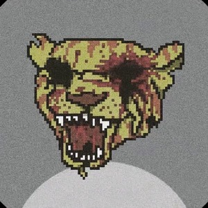
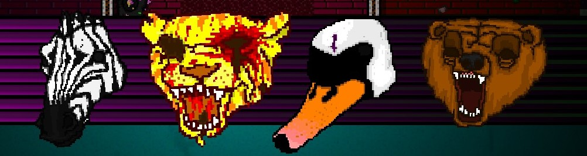
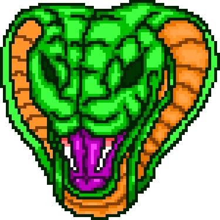
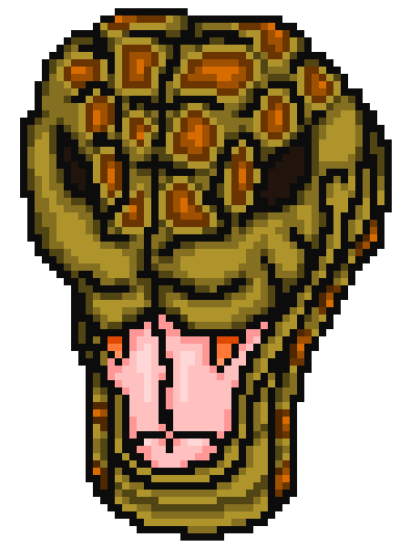
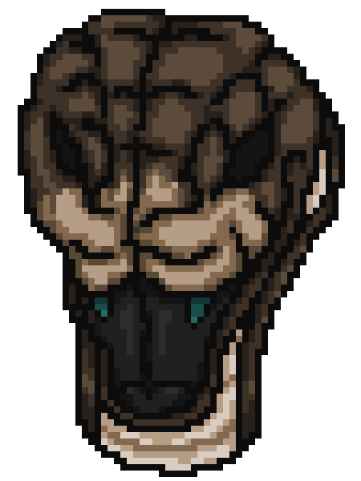

I Love Hotline Miami

Este sitio está libre de spoilers
Hotline Miami es un juego que, gracias a su jugabilidad única se ha convertido en su propio género de videojuegos
La historia de Hotline Miami se desarrolla en un Miami ficticio entre 1989 (Primer Juego) y 1991 (Segundo juego) invadido por la mafia rusa.
Nuestro protagonista (del primer juego) es un hombre sin nombre conocido como Jacket quien es un exmilitar, veterano del conflicto
armado ficticio de Hawaii.
Jacket recibe extrañas llamadas en su teléfono y él acude. Las direcciones que le son dadas son escondites de la mafia y Jacket se encarga de
"limpiar" el lugar.
Durante la cruzada justiciera de Jacket este consigue varias máscaras que le darán ciertas "ventajas" en cada misión.
1. Richard (Gallo): La primera máscara de Jacket, no da nigún beneficio
2. Rasmus (Buho): Mayor facilidad para hallar secretos
3. Tony (Tigre): Los puños de Jacket son letales
4. Aubrey (Cerdo): Mayor cantidad de armas en el nivel
5. Don Juan (Caballo): Portazos letales
6. Graham (Conejo): Camina más rápido
7. Dennis (Lobo): Empieza la misión con un cuchillo
8. George (Jirafa): Tiene la capacidad de ver más lejos
9. Ted (Perro): Los perros no atacarán a Jacket
10. Rufus (Elefante): Sobrevive a un disparo
11. Rami (Camello): Más munición en las armas
12. Willem (Mono): Toma el arma del enemigo despues de ejecutarlo
13. Peter (Unicornio): Disparos más silenciosos
14. Zack (Rana): La ventana de combo es más amplia
15. Oscar (Topo): Aplica un filtro negro y rojo que dificulta la visibilidad
16. Rick (Zorro): Todos los enemigos mueren de un disparo
17. Brandon (Pantera): Camina mucho más rápido
18. Charlie (Pulpo): Mayor cantidad de armas cuerpo a cuerpo en el nivel
19. Louie (Camaleón): Los enemigos tardan más en detectar a Jacket
20. Phil (Pez): Cambia todos los dialogos a un francés mal traducido
21. Nigel (Murciélago): Invierte los controles de movimiento
22. Earl (Morsa): Sobrevive a 2 disparos
23. Jones (Cocodrilo): ¡Más Sangre!
24. Carl (Grillo): Empieza la misión con un taladro (ejecución unica)
25. Jake (Cobra): Todos objetos arrojados son letales
26. Richter (Rata): Empieza la misión con un una UZI silenciada

La historia del primer juego no es la mejor contada y para eso existe la secuela, que nos cuenta
las cosas que sucedieron después y algunas que pasan antes o paralelamente a la historia de Jacket.
Con la segunda entrega veremos la llegada de nuevos personajes y nuevas mecánicas. Entre ellos:
Los Fans:
Un grupo de ex militares inspirados por las acciones de Jacket, "limpian" las calles de malvivientes
no por el reconocimiento pero por un sentido de justicia algo retorcida, homenajeando a Jacket con las máscaras de animales.
1. Corey (Cebra): Puede rodar para evitar balas y ataques.
2. Tony (Tigre): Puños letales, no puede usar armas.
3. Alex & Ash (Cisnes): Alex lleva una motosierra y Ash la sigue con las armas.
4. Mark (Oso): Inicia el nivel con dos ametralladoras.

Los operadores:
Los operadores son dos personajes que trabajan para una cierta organización. No se conocen y tienen diferentes puntos de vista
sobre lo que hacen.
Richter (Rata): Si, la máscara de rata del primer juego. Aqui no tiene ninguna habilidad especial ya que es el primer portador de la misma.
Jake:
El portador original de la máscara de cobra aparece y con otras dos máscaras más. El verdadero 100% american cumple con los encargos con todo el gusto del mundo al considerarse
un patriota defensor de su tierra y su gente. A pesar de no tener el cuerpo del soldado promedio, también cuenta con experiencia militar.
1. Jake (Cobra): Misma habilidad, lanzamientos letales,solo que su portador original.
2. Irvin (Serpiente moteada): Inicia con una pistola de clavos (no hace ruido)
3. Dallas (Serpiente marrón): Puños letales y gana un ataque de nunchaku que aumenta la velocidad de movimiento, no puede usar armas.



Personajes Especiales:
Manny Pardo:
Un detective de Miami con métodos muy poco ortodoxos y que suele hacer lo mismo que los fans, aunque los desprecia.
No tiene habilidades especiales como tal pero tiene ejecuciones especiales que suelen ser más rápidas.
Evans:
Un escritor que estuvo presente en el conflicto armado de Hawaii como reportero de prensa. Es amigo de Manny Pardo, quien le consigue información para
su libro, está escribiendo sobre los justicieros enmascarados. El se ve involucrado en situaciones peligrosas por los lugares que visita para conseguir su información,
aunque su mecánica especial es que no mata, solo noquea así que no usa armas de fuego ni cuchillos, pero si que puede desarmar las armas para que no puedan ser utilizadas y
además aumentan su multiplicador de combo.
Martin Brown:
Un actor de peliculas slasher, para el segundo juego se encuentra grabando una película sobre las acciones de Jacket ocurridas 2 años antes y curiosamente usa la máscara de Cerdo aunque sin habilidades especiales.
Parece que no está muy bien de la cabeza.
Beard:
El protagonista del conflito armado de Hawaii que transcurre años antes de los acontecimientos del primer juego.
Beard, tampoco tiene un nombre, es parte de un escuadron especial, compañero y amigo cercano de Jacket.
Su mecánica especial es poder elegir una de 5 armas en cada nivel, la cual no puede cambiar pero puede recargar, además cuenta con un cuchillo para cuando se queda sin munición.
Henchman:
El segundo al mando del jefe de la mafia rusa, está cansado de su trabajo y quiere retirarse.
Su habilidad especial es iniciar el nivel con una pistola silenciada.
The Son:
El joven jefe de la mafia rusa, quiere tener el reconocimiento de su padre y tiene un conflcito con los recién llegados colombianos.
Tiene 3 técnicas, representadas por accesorios, para elegir:
Bodyguard (lentes de sol) Inicia con una katana y puede rodar para evitar disparos
Dirty Hands (Puño americano) Golpes letales, no puede usar armas.
Bloodline (Collar de bala) Inicia con dos ametralladoras
Música:
Un juego tan bueno tiene que tener una banda sonora igual de buena y acorde a la época en la que se ambientan ambos juegos, con mucho sintetizador que
acompaña bastante bien a lo frenético del gameplay.
Aquí te dejo un link a una playlist para que lo escuches.
Luis Antonio Menacho Torrez - Univeridad Catolica Boliviana San Pablo.